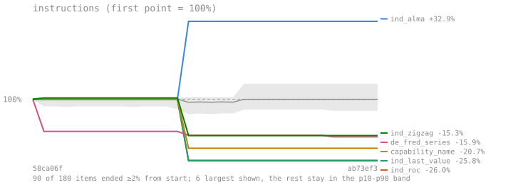
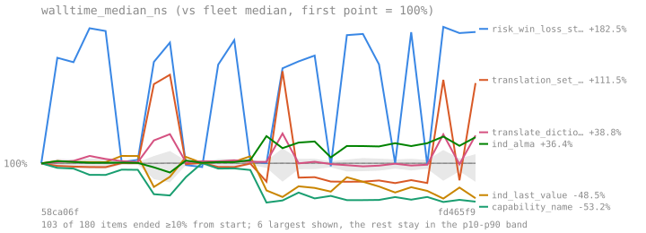
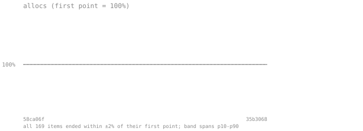

Performance summary#
Generated by
cargo soothfast report
| item | instructions | median | p99 | allocs | polls |
|---|---|---|---|---|---|
finance_query::bt_atr_sizing | 640995 | 56.78µs | 57.98µs | 164 | n/a |
finance_query::bt_base_to_htf_index | 321100 | 20.81µs | 21.09µs | 1 | n/a |
finance_query::bt_bayesian_search | 29263780 | 2.34ms | 2.40ms | 2382 | n/a |
finance_query::bt_fractional_kelly_sizing | 470386 | 38.61µs | 39.09µs | 88 | n/a |
finance_query::bt_grid_pareto | 13085420 | 537.13µs | 607.89µs | 2966 | n/a |
finance_query::bt_grid_search | 13138669 | 541.22µs | 610.92µs | 3012 | n/a |
finance_query::bt_leveraged_margin | 594543 | 47.27µs | 50.90µs | 158 | n/a |
finance_query::bt_monte_carlo | 1091478 | 140.75µs | 141.62µs | 6 | n/a |
finance_query::bt_resample | 1451621 | 87.98µs | 90.04µs | 11 | n/a |
finance_query::bt_sma_crossover | 9498658 | 775.42µs | 829.18µs | 2373 | n/a |
finance_query::bt_strategy_builder | 1077956 | 138.61µs | 149.55µs | 328 | n/a |
finance_query::capability_name | 23 | 1.6ns | 2.0ns | 0 | n/a |
finance_query::cond_bench_always_false | 250414 | 19.83µs | 20.29µs | 6 | n/a |
finance_query::cond_bench_always_true | 4333659 | 358.91µs | 373.29µs | 4045 | n/a |
finance_query::cond_bench_has_position | 4322667 | 359.82µs | 365.69µs | 4045 | n/a |
finance_query::cond_bench_held_for_bars | 1519726 | 137.23µs | 178.67µs | 1041 | n/a |
finance_query::cond_bench_in_loss | 4359954 | 366.12µs | 371.30µs | 4045 | n/a |
finance_query::cond_bench_in_profit | 558438 | 42.58µs | 42.84µs | 142 | n/a |
finance_query::cond_bench_is_long | 4317903 | 363.17µs | 374.19µs | 4045 | n/a |
finance_query::cond_bench_is_short | 401363 | 29.88µs | 30.09µs | 13 | n/a |
finance_query::cond_bench_no_position | 401363 | 29.90µs | 30.56µs | 13 | n/a |
finance_query::cond_bench_stop_loss | 456653 | 36.41µs | 36.72µs | 24 | n/a |
finance_query::cond_bench_take_profit | 443285 | 35.31µs | 36.70µs | 13 | n/a |
finance_query::cond_bench_trailing_stop | 596815 | 44.15µs | 46.58µs | 92 | n/a |
finance_query::cond_bench_trailing_take_profit | 605815 | 45.22µs | 45.91µs | 72 | n/a |
finance_query::de_chart | 109149 | 7.11µs | 7.19µs | 13 | n/a |
finance_query::de_crypto_coins | 352875 | 26.43µs | 27.45µs | 205 | n/a |
finance_query::de_currencies | 602439 | 44.94µs | 45.70µs | 647 | n/a |
finance_query::de_edgar_facts | 13979699 | 1.06ms | 1.18ms | 11899 | n/a |
finance_query::de_edgar_submissions | 5293321 | 348.59µs | 356.53µs | 6784 | n/a |
finance_query::de_fear_and_greed | 1425 | 92.5ns | 96.8ns | 0 | n/a |
finance_query::de_fear_and_greed_crypto_history | 15650 | 1.09µs | 1.12µs | 3 | n/a |
finance_query::de_financials | 237737 | 16.06µs | 16.58µs | 206 | n/a |
finance_query::de_fred_series | 1061290 | 85.81µs | 93.25µs | 873 | n/a |
finance_query::de_hours | 7536 | 560.6ns | 583.7ns | 10 | n/a |
finance_query::de_market_summary | 262258 | 22.73µs | 24.45µs | 228 | n/a |
finance_query::de_news | 45306 | 2.93µs | 3.02µs | 53 | n/a |
finance_query::de_options | 12505 | 816.3ns | 863.8ns | 6 | n/a |
finance_query::de_quote | 9567936 | 796.40µs | 883.02µs | 8235 | n/a |
finance_query::de_screener | 3849278 | 310.74µs | 329.06µs | 4498 | n/a |
finance_query::de_search | 56239 | 4.00µs | 4.22µs | 55 | n/a |
finance_query::de_treasury_yields | 779612 | 64.81µs | 66.30µs | 119 | n/a |
finance_query::de_trending | 18398 | 1.09µs | 1.11µs | 24 | n/a |
finance_query::dispatch_select | 68 | 3.0ns | 3.1ns | 0 | n/a |
finance_query::ind_accumulation_distribution | 27672 | 3.32µs | 3.36µs | 1 | n/a |
finance_query::ind_alma | 107851 | 5.40µs | 5.51µs | 2 | n/a |
finance_query::ind_aroon | 194710 | 9.39µs | 10.32µs | 9 | n/a |
finance_query::ind_atr | 57477 | 8.53µs | 8.59µs | 2 | n/a |
finance_query::ind_awesome_oscillator | 52496 | 7.40µs | 7.46µs | 4 | n/a |
finance_query::ind_balance_of_power | 23362 | 1.70µs | 1.77µs | 2 | n/a |
finance_query::ind_bull_bear_power | 29581 | 5.97µs | 5.99µs | 3 | n/a |
finance_query::ind_cci | 149203 | 14.64µs | 15.33µs | 2 | n/a |
finance_query::ind_chaikin_oscillator | 66908 | 14.03µs | 14.46µs | 4 | n/a |
finance_query::ind_choppiness_index | 281356 | 16.69µs | 18.08µs | 8 | n/a |
finance_query::ind_cmf | 50390 | 3.25µs | 3.39µs | 2 | n/a |
finance_query::ind_cmo | 61742 | 4.48µs | 4.54µs | 2 | n/a |
finance_query::ind_coppock_curve | 74202 | 6.92µs | 6.99µs | 3 | n/a |
finance_query::ind_dema | 40936 | 10.35µs | 10.39µs | 3 | n/a |
finance_query::ind_donchian_channels | 181271 | 8.59µs | 8.82µs | 9 | n/a |
finance_query::ind_elder_ray | 29582 | 5.97µs | 6.02µs | 3 | n/a |
finance_query::ind_fibonacci_pivot_points | 24550 | 2.18µs | 2.20µs | 1 | n/a |
finance_query::ind_fibonacci_retracement | 184891 | 8.57µs | 8.74µs | 9 | n/a |
finance_query::ind_heikin_ashi | 133768 | 12.20µs | 12.74µs | 9 | n/a |
finance_query::ind_hma | 103233 | 11.38µs | 11.48µs | 5 | n/a |
finance_query::ind_ichimoku | 535303 | 26.38µs | 28.34µs | 27 | n/a |
finance_query::ind_keltner_channels | 98514 | 14.76µs | 15.99µs | 5 | n/a |
finance_query::ind_last_value | 23 | 1.7ns | 1.8ns | 0 | n/a |
finance_query::ind_macd | 82597 | 17.06µs | 17.25µs | 7 | n/a |
finance_query::ind_mcginley_dynamic | 21714 | 10.72µs | 10.75µs | 1 | n/a |
finance_query::ind_mfi | 94264 | 5.54µs | 5.60µs | 3 | n/a |
finance_query::ind_momentum | 1190431 | 104.78µs | 108.46µs | 52 | n/a |
finance_query::ind_momentum_single | 8020 | 459.5ns | 475.7ns | 1 | n/a |
finance_query::ind_moving_averages | 488120 | 75.34µs | 77.34µs | 27 | n/a |
finance_query::ind_parabolic_sar | 24998 | 1.80µs | 1.93µs | 1 | n/a |
finance_query::ind_patterns | 1184450 | 74.18µs | 75.58µs | 1 | n/a |
finance_query::ind_pivot_points | 26053 | 2.50µs | 2.54µs | 1 | n/a |
finance_query::ind_roc | 16876 | 1.50µs | 1.52µs | 1 | n/a |
finance_query::ind_sma | 2200136 | 328.77µs | 330.73µs | 1 | n/a |
finance_query::ind_stochastic | 226828 | 12.83µs | 13.25µs | 11 | n/a |
finance_query::ind_stochastic_rsi | 288917 | 22.24µs | 22.90µs | 12 | n/a |
finance_query::ind_supertrend | 118930 | 11.60µs | 11.66µs | 4 | n/a |
finance_query::ind_tema | 58081 | 15.17µs | 15.64µs | 4 | n/a |
finance_query::ind_trend | 1045401 | 72.13µs | 74.28µs | 48 | n/a |
finance_query::ind_true_range | 18089 | 1.06µs | 1.07µs | 1 | n/a |
finance_query::ind_volatility | 675327 | 56.84µs | 58.58µs | 28 | n/a |
finance_query::ind_volume | 313454 | 34.49µs | 35.14µs | 14 | n/a |
finance_query::ind_vwap | 31671 | 3.41µs | 3.56µs | 1 | n/a |
finance_query::ind_vwma | 49541 | 2.57µs | 2.58µs | 1 | n/a |
finance_query::ind_williams_r | 180141 | 8.45µs | 8.65µs | 7 | n/a |
finance_query::ind_wma | 31001 | 3.91µs | 3.92µs | 7 | n/a |
finance_query::ind_zigzag | 19859 | 1.22µs | 1.29µs | 4 | n/a |
finance_query::ref_bench_accumulation_distribution | 575870 | 43.24µs | 44.21µs | 23 | n/a |
finance_query::ref_bench_adx | 5311493 | 438.67µs | 452.13µs | 4930 | n/a |
finance_query::ref_bench_alma | 5899258 | 467.35µs | 471.31µs | 5019 | n/a |
finance_query::ref_bench_aroon | 5511942 | 440.44µs | 463.94µs | 4950 | n/a |
finance_query::ref_bench_atr | 5548473 | 442.54µs | 452.78µs | 4996 | n/a |
finance_query::ref_bench_awesome_oscillator | 3090695 | 265.20µs | 272.04µs | 2636 | n/a |
finance_query::ref_bench_balance_of_power | 574481 | 41.30µs | 42.61µs | 25 | n/a |
finance_query::ref_bench_bear_power | 1539697 | 120.57µs | 121.84µs | 806 | n/a |
finance_query::ref_bench_bollinger | 6100702 | 466.97µs | 484.94µs | 4968 | n/a |
finance_query::ref_bench_bull_power | 5302889 | 402.75µs | 406.66µs | 4238 | n/a |
finance_query::ref_bench_candle_body | 254396 | 19.55µs | 19.92µs | 6 | n/a |
finance_query::ref_bench_candle_range | 5165267 | 413.47µs | 448.21µs | 5043 | n/a |
finance_query::ref_bench_cci | 3255676 | 260.91µs | 265.35µs | 2605 | n/a |
finance_query::ref_bench_chaikin_oscillator | 646841 | 56.19µs | 56.49µs | 26 | n/a |
finance_query::ref_bench_choppiness_index | 5819352 | 452.48µs | 461.33µs | 5002 | n/a |
finance_query::ref_bench_close | 5190103 | 413.71µs | 417.57µs | 5043 | n/a |
finance_query::ref_bench_cmf | 589599 | 42.57µs | 43.81µs | 25 | n/a |
finance_query::ref_bench_cmo | 3082622 | 248.39µs | 260.01µs | 2598 | n/a |
finance_query::ref_bench_coppock_curve | 3343041 | 260.66µs | 265.05µs | 2559 | n/a |
finance_query::ref_bench_dema | 5497724 | 435.98µs | 475.74µs | 4875 | n/a |
finance_query::ref_bench_donchian | 6000156 | 464.01µs | 477.16µs | 4976 | n/a |
finance_query::ref_bench_elder_bear_power | 1538362 | 120.88µs | 125.50µs | 806 | n/a |
finance_query::ref_bench_elder_bull_power | 5215198 | 409.12µs | 421.42µs | 4238 | n/a |
finance_query::ref_bench_ema | 5398604 | 431.94µs | 435.94µs | 4963 | n/a |
finance_query::ref_bench_gap_pct | 2496160 | 223.92µs | 226.14µs | 2489 | n/a |
finance_query::ref_bench_high | 5191091 | 413.05µs | 416.08µs | 5043 | n/a |
finance_query::ref_bench_hma | 5408149 | 437.84µs | 448.47µs | 4957 | n/a |
finance_query::ref_bench_htf | 6531233 | 498.12µs | 510.70µs | 7039 | n/a |
finance_query::ref_bench_htf_region | 6423194 | 492.18µs | 508.63µs | 7039 | n/a |
finance_query::ref_bench_ichimoku | 6348174 | 479.85µs | 498.72µs | 4836 | n/a |
finance_query::ref_bench_ichimoku_custom | 6339656 | 478.93µs | 487.44µs | 4836 | n/a |
finance_query::ref_bench_is_bearish | 255395 | 19.44µs | 20.04µs | 6 | n/a |
finance_query::ref_bench_is_bullish | 255395 | 16.35µs | 16.48µs | 6 | n/a |
finance_query::ref_bench_keltner | 5838011 | 472.85µs | 499.45µs | 4972 | n/a |
finance_query::ref_bench_low | 5194085 | 413.58µs | 418.70µs | 5043 | n/a |
finance_query::ref_bench_macd | 3321396 | 266.39µs | 274.13µs | 2541 | n/a |
finance_query::ref_bench_mcginley | 5513907 | 439.26µs | 455.27µs | 4963 | n/a |
finance_query::ref_bench_median_price | 5166265 | 414.75µs | 422.04µs | 5043 | n/a |
finance_query::ref_bench_mfi | 5599564 | 440.60µs | 458.06µs | 4998 | n/a |
finance_query::ref_bench_momentum | 3106469 | 244.31µs | 251.97µs | 2552 | n/a |
finance_query::ref_bench_obv | 633638 | 54.74µs | 55.16µs | 30 | n/a |
finance_query::ref_bench_open | 5191091 | 414.42µs | 471.06µs | 5043 | n/a |
finance_query::ref_bench_parabolic_sar | 5848186 | 465.84µs | 712.44µs | 5056 | n/a |
finance_query::ref_bench_price | 5190103 | 411.83µs | 416.22µs | 5043 | n/a |
finance_query::ref_bench_price_change_pct | 2916804 | 229.37µs | 235.73µs | 2489 | n/a |
finance_query::ref_bench_relative_volume | 5672919 | 442.97µs | 459.49µs | 4949 | n/a |
finance_query::ref_bench_roc | 2913687 | 243.49µs | 258.01µs | 2587 | n/a |
finance_query::ref_bench_rsi | 5544087 | 437.19µs | 453.86µs | 4994 | n/a |
finance_query::ref_bench_sma | 5402520 | 431.53µs | 437.30µs | 4963 | n/a |
finance_query::ref_bench_stochastic | 6151529 | 468.16µs | 484.95µs | 4987 | n/a |
finance_query::ref_bench_stochastic_rsi | 6005689 | 467.80µs | 474.21µs | 4831 | n/a |
finance_query::ref_bench_supertrend | 6194733 | 476.13µs | 485.03µs | 5021 | n/a |
finance_query::ref_bench_tema | 5404246 | 434.64µs | 449.61µs | 4781 | n/a |
finance_query::ref_bench_true_range | 5341937 | 438.76µs | 447.71µs | 5059 | n/a |
finance_query::ref_bench_typical_price | 5607532 | 440.12µs | 453.21µs | 5043 | n/a |
finance_query::ref_bench_volume | 5191091 | 415.05µs | 432.09µs | 5043 | n/a |
finance_query::ref_bench_vwap | 5632130 | 439.55µs | 449.93µs | 5060 | n/a |
finance_query::ref_bench_vwma | 5367654 | 431.35µs | 444.18µs | 4964 | n/a |
finance_query::ref_bench_williams_r | 748884 | 49.78µs | 50.97µs | 29 | n/a |
finance_query::ref_bench_wma | 5488244 | 432.01µs | 436.84µs | 4969 | n/a |
finance_query::risk_beta | 262224 | 53.54µs | 53.76µs | 0 | n/a |
finance_query::risk_calmar | 156 | 12.5ns | 12.7ns | 0 | n/a |
finance_query::risk_historical_cvar | 4332813 | 244.78µs | 248.20µs | 2 | n/a |
finance_query::risk_historical_var | 31167375 | 2.17ms | 2.22ms | 2 | n/a |
finance_query::risk_information_ratio | 145879 | 30.22µs | 30.37µs | 1 | n/a |
finance_query::risk_kelly_criterion | 30925 | 3.28µs | 3.32µs | 16 | n/a |
finance_query::risk_max_drawdown | 35226 | 7.02µs | 7.06µs | 1 | n/a |
finance_query::risk_omega_ratio | 139305 | 26.77µs | 26.96µs | 0 | n/a |
finance_query::risk_parametric_cvar | 100416 | 26.81µs | 26.98µs | 0 | n/a |
finance_query::risk_parametric_var | 100412 | 26.80µs | 26.95µs | 0 | n/a |
finance_query::risk_sharpe | 100406 | 26.79µs | 26.98µs | 0 | n/a |
finance_query::risk_sortino | 161843 | 26.78µs | 27.00µs | 0 | n/a |
finance_query::risk_tracking_error | 145876 | 30.20µs | 30.38µs | 1 | n/a |
finance_query::risk_ulcer_index | 619414 | 157.57µs | 158.36µs | 2 | n/a |
finance_query::risk_win_loss_stats | 389633 | 49.25µs | 65.15µs | 25 | n/a |
finance_query::rss_parse | 64879 | 4.03µs | 4.11µs | 48 | n/a |
finance_query::score_news | 896321 | 59.36µs | 60.34µs | 976 | n/a |
finance_query::score_transcript | 47959581 | 3.67ms | 3.77ms | 42100 | n/a |
finance_query::ser_currencies | 223104 | 12.89µs | 13.24µs | 8 | n/a |
finance_query::stream_deserialize | 14643 | 900.1ns | 935.8ns | 4 | n/a |
finance_query::stream_serialize | 11065 | 798.9ns | 804.0ns | 4 | n/a |
finance_query::ticker_chart_then_cached | 14730 | 1.18µs | 1.25µs | 20 | n/a |
finance_query::ticker_quote_polls | 222908 | 5.57µs | 5.67µs | 3 | 1 |
finance_query::ticker_quote_then_cached | 420569 | 8.55µs | 8.76µs | 4 | n/a |
finance_query::tickers_batch_quote_then_cached | 237782 | 8.31µs | 8.37µs | 16 | n/a |
finance_query::translate_dictionary | 19323 | 1.54µs | 1.57µs | 49 | n/a |
finance_query::translation_set_backend | 244 | 13.6ns | 14.3ns | 1 | n/a |
finance_query::translation_translate | 52665 | 2.97µs | 3.09µs | 79 | n/a |
finance_query::translation_translate_with | 51090 | 2.77µs | 2.87µs | 77 | n/a |



built with cargo soothfast docs build
source